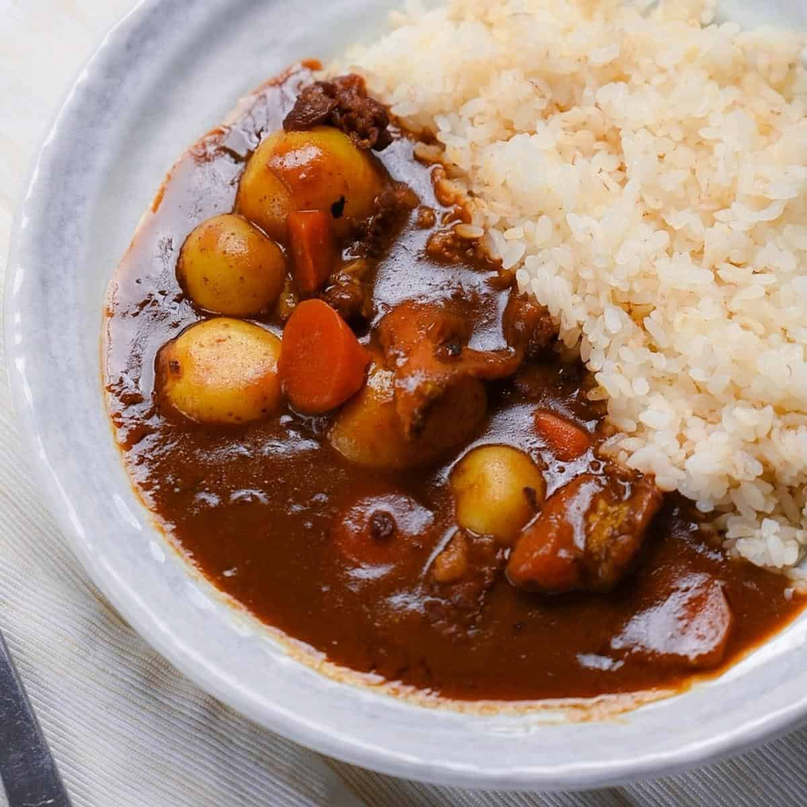

back
Japanese curry

Katsu curry is just a variation of Japanese curry with a chicken cutlet
on top. I used a store-bought block of Japanese curry roux which is
commonly used in Japanese households. Chicken Cutlet (Japanese version of chicken
schnitzel) brings the Japanese curry up to the next level. It’s so delicious and
filling.
Ingredients
- buldak
- caesour salad
- mac n cheese
- cheese
- noodle
- aasiyah
Steps
- Put oil into a pot and sauté onion pieces until the edges start browning
- Add potato and carrot pieces to the pot and stir.
- Add water and bring it to a boil. Remove scum as it rises.
- Add curry roux and cook.
- Cook chicken cutlets and slice them.
- Put cooked rice on one side of a serving plate, place cutlet pieces next to the rice.
- Pour curry on the side next to the cutlet away from the rice.
- Place a small amount of fukujinzuke on the plate.